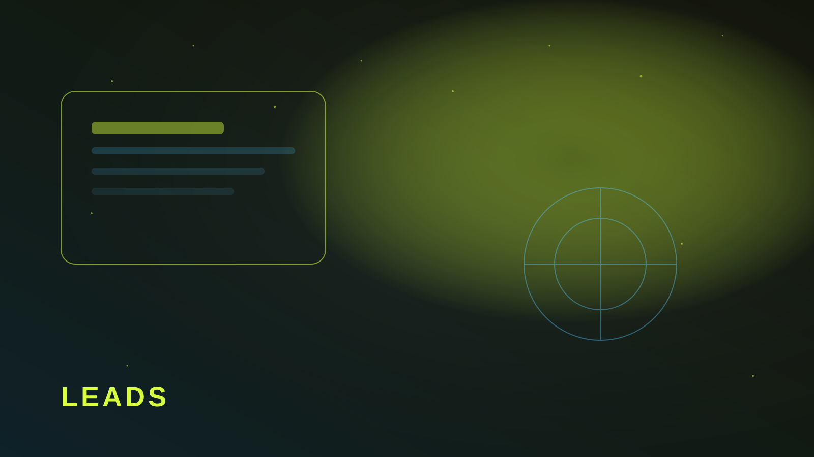

Проблема не в боте, а в контексте
Типичный бот принимает телефон и кидает строку менеджеру. Дальше начинается игра в детектива: «а что человек хотел?». Хороший сценарий передаёт источник, интересующий продукт, последний шаг и короткий комментарий пользователя.
Тогда менеджер отвечает за один заход. Клиент чувствует, что его услышали. Конверсия из заявки в диалог растёт без увеличения рекламного бюджета.

Минимум статусов, который уже спасает
- Новая — ещё никто не взял.
- В работе — менеджер на связи.
- Закрыта — сделка или отказ с причиной.
Статусы можно вести даже РІ таблице. Главное — единое место, Р° РЅРµ три чата Рё личные переписки. Рначе заявки СЃРЅРѕРІР° «теряются» РІ шуме.
Что передавать вместе с номером
UTM или метку источника, название услуги, текст РІРѕРїСЂРѕСЃР°, время заявки, язык интерфейса. Ртого достаточно, чтобы первый ответ был предметным. Р’СЃС‘ остальное — после контакта.